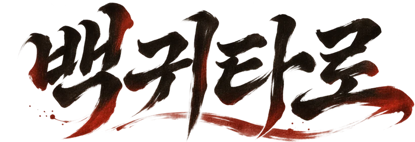

백귀술사호연
무엇이 궁금한가
생년월일은 묻지 않네. 질문 하나면 족하네.
여우의 연기, 호연 — 해동 백귀 백 장으로
말 속에 숨은 마음과 보이지 않는 기운을 읽는다
오락 목적의 해석 콘텐츠이며 미래를 보장하지 않습니다
패를 세 번 쓸어 보게 손으로 패 위를 좌우로 훑으면 되네
열 장을 뽑게 부채를 좌우로 돌리다가, 손이 멎는 자리를 누르게
온미라이프(이하 '회사')는 백귀타로를 운영하며 이용자의 개인정보를 아래와 같이 처리합니다.
백귀타로를 쓰기 전에 아래를 읽어 주십시오.
이 기기에서 물었던 것들일세. 누르면 그때 패를 그대로 펼쳐 주지.
잠깐!
이 패들이 함께 나왔다고?
패를 눌러 뒤집게
패를 다 보았으면 화면을 누르게